# Node.js
# Node.js入门
什么是Node.js?
- Node.js的本质是一个JavaScript的解析器
- Node.js是JavaScript的运行环境
- Node.js是一个服务器程序
- Node.js本身使用的是V8引擎
- Node不是Web服务器
为什么要使用Node.js?
- 为了提供高性能的web服务
- IO性能强大
- 事件处理机制完善
- 天然能够处理DOM
- 社区活跃，生态圈日趋完善
Node.js的优势
- 处理大流量数据
- 适合实时交互的应用
- 完善支持对象数据库
- 异步处理大量并发连接
写一个例子，在node环境下，如何连接服务器。
var http=require('http');
http.createServer(function(req,res){
//定义http头
res.writeHead(200,{'Content-Type':'text/plan'})
//发送相应数据
res.end('hello world')
}).listen(8000)
2
3
4
5
6
7
nodejs就是提供了一个js运行的环境，就好像充当浏览器的角色，为js代码提供解析。
Node.js REPL环境
在终端输入 node 就进入node的环境
- ctrl+c 退出当前终端
- ctrl+c 两下 退出node REPL
- ctrl+d 退出node REPL（linux）
- 上/下键 查看输入的历史命令
- tab 列出当前命令
- .help 列出使用命令
- .break 退出多行表达式
- .clear 退出多行表达式
- .save filename 保存当前的node REPL会话到指定文件
- .load filename 载入当前的node REPL会话到指定文件 npm 命令
- npm install npm -g 更新npm
- npm install ** -g 全局安装
- npm install ** 本地安装
- npm uninstall ** 删除
- npm search ** 查找
- npm help 帮助
# Node.js 回调函数
# 什么是回调
函数调用方式分为三类：同步调用、回调和异步调用。回调是一种双向调用模式，可以通过回调函数来实现回调。
# 阻塞与非阻塞
要了解回调函数什么时候使用，就要先了解一下阻塞与非阻塞。
阻塞与非阻塞关注的是程序在等待调用结果时的状态，阻塞是要等程序做完，而非阻塞是可以先做其他事，执行完后会通知当前函数。
通过代码比较一下：
//阻塞代码 例如读取一个文件，在读取完这个文件之前，是不能有其他操作的，这就形成了阻塞
var fs=require('fs');
var data=fs.readFileSync('data.txt');//readFileSync同步读取
console.log(data.toString());
//非阻塞代码
var fs=require('fs');
fs.readFile('data.txt',function(err,data){
if(err){
return console.error(err)
}
console.log(data.toString());
})
console.log('程序执行完毕');//执行的顺序是不必等待前面的，先执行后面执行完毕，再打出数据
2
3
4
5
6
7
8
9
10
11
12
13
这两段代码，就能看出阻塞与非阻塞的区别，非阻塞就是通过匿名函数实现了回调。这就是回调的使用。
# Node.js事件驱动机制
Node.js事件驱动机制在nodejs编程过程中是比较重要的一个环节。先简单的了解两点，事件驱动模型，事件与事件的绑定。
要了解nodejs驱动模型，首先要知道nodejs的运行机制，nodejs是一个单进程单线程的程序，也就是说它不能同时并发的完成更多的事情，而通过事件或回调来实现并发的这种效果。正因为它没有多线程那样额外的工作，所有它的性能是比较高。
第二点，nodejs当中每一个API都支持回调函数，而且都是属于独立的线程来运行的。而使用异步函数调用，我们就可以使用这种机制来进行并发处理。
nodejs中几乎所有事件机制都是依据观察者模式实现的，而观察者模式是设计模式的一种。
事件驱动模型图解 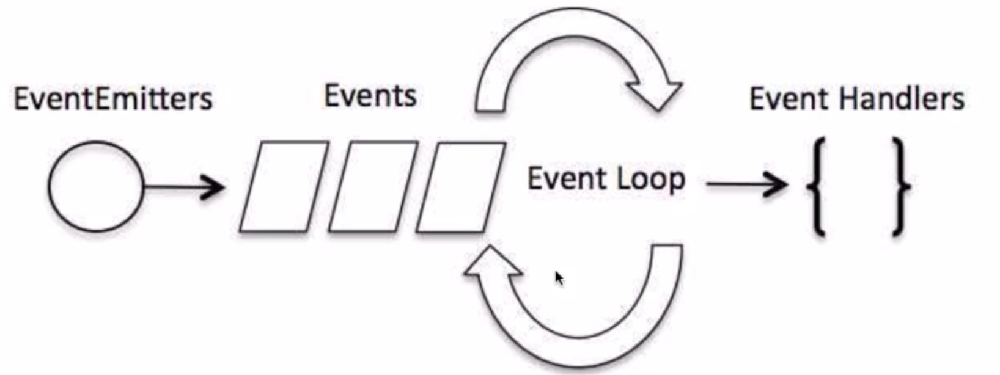
# 事件处理代码流程
- 引入events对象，创建eventEmitter对象
- 绑定事件处理程序
- 触发事件
//引入events对象，创建eventEmitter对象
var events=require('events');
var eventEmitter=new events.EventEmitter();
//绑定事件处理程序
var connctHandler=function connected(){
console.log('connected被调用')；
}
eventEmitter.on('connection',connctHandler());//完成事件绑定
//触发事件
eventEmitter.emit('connection')
2
3
4
5
6
7
8
9
10
# Node.js模块化
# 模块化的概念与意义
- 为了让Node.js的文件可以相互调用Node.js提供了一个简单的模块系统
- 模块是Node.js应用程序的基本组成部分
- 文件和模块是一一对应的。一个Node.js文件就是一个模块
- 这个文件可能是JavaScript代码，JSON或者编译过的C/C++扩展
- Node.js中存在4类模块（原生和3种文件模块）
# Node.js的模块加载流程
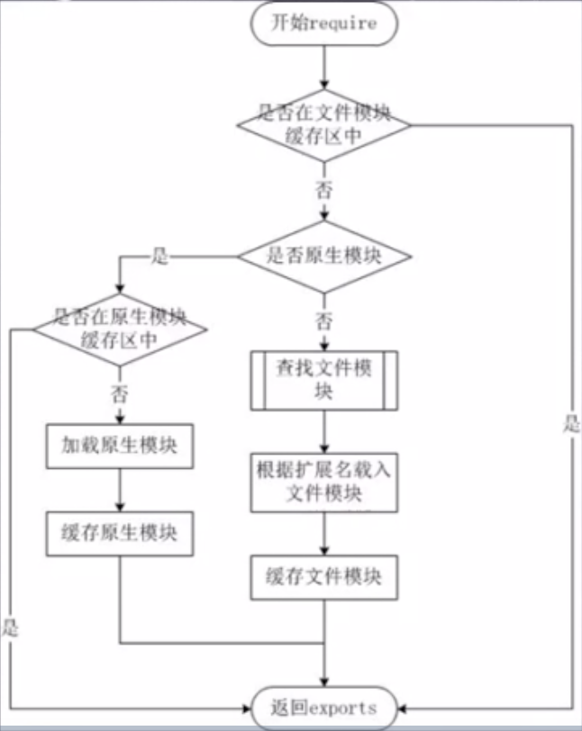
# Node.js的模块加载方式
- 从文件模块缓存中加载
- 从原生模块加载
- 从文件加载
require方法加载模块
- require方法接受以下几种参数的传递：
- http fs path等，原生模块
- ./mod或../mod，相对路径的文件模块。
- /pathtomodule/mod,绝对路径的文件模块
- mod，非原生模块的文件模块。
代码示范
//模块
function Hello(){
//具体操作
}
module.exports=Hello;
//另一个要调用hello模块中
var Hello=require('./hello');
hello=new Hello();
2
3
4
5
6
7
8
9
# Node.js函数
# 函数概念
- 在JavaScript中，一个函数可以作为另一个函数的参数
- 我们可以定义一个函数，然后传递，也可以在传递参数的地方直接定义函数（匿名函数）
- Node.js中函数的使用与JavaScript类似
# 匿名函数
- 我们可以把一个函数作为变量传递
- 不一定“先定义，再传递”，可以用直接在另一个函数的括号中定义和传递这个函数
function ex(someFunction,value){
someFunction(value);
}
ex(function(word){console.log(word)},"hello")
2
3
4
# Node.js路由
我们要为路由提供请求的 URL 和其他需要的 GET 及 POST 参数，随后路由需要根据这些数据来执行相应的代码。
因此，我们需要查看 HTTP 请求，从中提取出请求的 URL 以及 GET/POST 参数。这一功能应当属于路由还是服务器（甚至作为一个模块自身的功能）确实值得探讨，但这里暂定其为我们的HTTP服务器的功能。
我们需要的所有数据都会包含在 request 对象中，该对象作为 onRequest() 回调函数的第一个参数传递。但是为了解析这些数据，我们需要额外的 Node.JS 模块，它们分别是 url 和 querystring 模块。 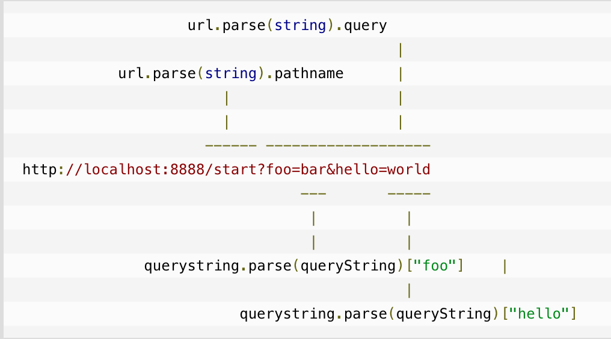 写一个服务器搭使用路由模块的例子
//server.js
var http = require("http");
var url = require("url");
function start(route) {
function onRequest(request, response) {
var pathname = url.parse(request.url).pathname;
route(pathname,response);
}
http.createServer(onRequest).listen(8888);
console.log("Server has started.");
}
exports.start = start;
//router.js
function route(pathname,response) {
if(pathname=="/"){
response.writeHead(200, {"Content-Type": "text/plain"});
response.write("Hello World");
response.end();
}else if(pathname=="/index/home"){
response.end('index')
}else{
response.end('404')
}
}
exports.route = route;
//index.js
var server = require("./server");
var router = require("./router");
server.start(router.route);
2
3
4
5
6
7
8
9
10
11
12
13
14
15
16
17
18
19
20
21
22
23
24
25
26
27
28
29
30
31
32
33
34
# Node.js GET/POST请求
在很多场景中，我们的服务器都需要跟用户的浏览器打交道，如表单提交。
表单提交到服务器一般都使用 GET/POST 请求。
本章节我们将为大家介绍 Node.js GET/POST请求。
获取GET请求内容
由于GET请求直接被嵌入在路径中，URL是完整的请求路径，包括了?后面的部分，因此你可以手动解析后面的内容作为GET请求的参数。
node.js 中 url 模块中的 parse 函数提供了这个功能。
var http = require('http');
var url = require('url');
var util = require('util');
http.createServer(function(req, res){
res.writeHead(200, {'Content-Type': 'text/plain; charset=utf-8'});
res.end(util.inspect(url.parse(req.url, true)));
}).listen(3000);
2
3
4
5
6
7
8
在浏览器中访问 http://localhost:3000/user?name=菜鸟教程&url=www.runoob.com 然后查看返回结果: 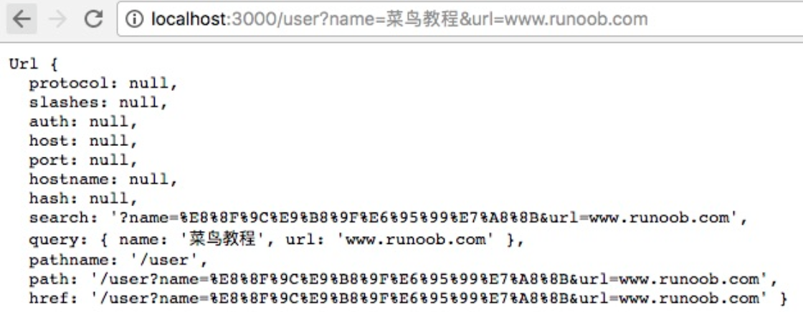
获取 POST 请求内容
POST 请求的内容全部的都在请求体中，http.ServerRequest 并没有一个属性内容为请求体，原因是等待请求体传输可能是一件耗时的工作。
比如上传文件，而很多时候我们可能并不需要理会请求体的内容，恶意的POST请求会大大消耗服务器的资源，所以 node.js 默认是不会解析请求体的，当你需要的时候，需要手动来做。
var http = require('http');
var querystring = require('querystring');
var postHTML =
'<html><head><meta charset="utf-8"><title>菜鸟教程 Node.js 实例</title></head>' +
'<body>' +
'<form method="post">' +
'网站名： <input name="name"><br>' +
'网站 URL： <input name="url"><br>' +
'<input type="submit">' +
'</form>' +
'</body></html>';
http.createServer(function (req, res) {
var body = "";
req.on('data', function (chunk) {
body += chunk;
});
req.on('end', function () {
// 解析参数
body = querystring.parse(body);
// 设置响应头部信息及编码
res.writeHead(200, {'Content-Type': 'text/html; charset=utf8'});
if(body.name && body.url) { // 输出提交的数据
res.write("网站名：" + body.name);
res.write("<br>");
res.write("网站 URL：" + body.url);
} else { // 输出表单
res.write(postHTML);
}
res.end();
});
}).listen(3000);
2
3
4
5
6
7
8
9
10
11
12
13
14
15
16
17
18
19
20
21
22
23
24
25
26
27
28
29
30
31
32
33
34
# Node.js全局对象
JavaScript 中有一个特殊的对象，称为全局对象（Global Object），它及其所有属性都可以在程序的任何地方访问，即全局变量。
在浏览器 JavaScript 中，通常 window 是全局对象， 而 Node.js 中的全局对象是 global，所有全局变量（除了 global 本身以外）都是 global 对象的属性。
在 Node.js 我们可以直接访问到 global 的属性，而不需要在应用中包含它。
# 全局对象与全局变量
global 最根本的作用是作为全局变量的宿主。按照 ECMAScript 的定义，满足以下条 件的变量是全局变量：
- 在最外层定义的变量；
- 全局对象的属性；
- 隐式定义的变量（未定义直接赋值的变量）。
当你定义一个全局变量时，这个变量同时也会成为全局对象的属性，反之亦然。需要注 意的是，在 Node.js 中你不可能在最外层定义变量，因为所有用户代码都是属于当前模块的， 而模块本身不是最外层上下文。
注意： 最好不要使用 var 定义变量以避免引入全局变量，因为全局变量会污染命名空间，提高代码的耦合风险。
# __filename
__filename 表示当前正在执行的脚本的文件名。它将输出文件所在位置的绝对路径，且和命令行参数所指定的文件名不一定相同。 如果在模块中，返回的值是模块文件的路径。
# __dirname
__dirname 表示当前执行脚本所在的目录。
# setTimeout(cb, ms)
setTimeout(cb, ms) 全局函数在指定的毫秒(ms)数后执行指定函数(cb)。：setTimeout() 只执行一次指定函数。
返回一个代表定时器的句柄值。
# clearTimeout(t)
clearTimeout( t ) 全局函数用于停止一个之前通过 setTimeout() 创建的定时器。 参数 t 是通过 setTimeout() 函数创建的定时器。
# setInterval(cb, ms)
setInterval(cb, ms) 全局函数在指定的毫秒(ms)数后执行指定函数(cb)。
返回一个代表定时器的句柄值。可以使用 clearInterval(t) 函数来清除定时器。
setInterval() 方法会不停地调用函数，直到 clearInterval() 被调用或窗口被关闭。
# console
console 用于提供控制台标准输出，它是由 Internet Explorer 的 JScript 引擎提供的调试工具，后来逐渐成为浏览器的实施标准。
Node.js 沿用了这个标准，提供与习惯行为一致的 console 对象，用于向标准输出流（stdout）或标准错误流（stderr）输出字符。
# process
process 是一个全局变量，即 global 对象的属性。
它用于描述当前Node.js 进程状态的对象，提供了一个与操作系统的简单接口。通常在你写本地命令行程序的时候，少不了要 和它打交道。下面将会介绍 process 对象的一些最常用的成员方法。
| 序号 | 方法 & 描述 |
|---|---|
| 1 | exit 当进程准备退出时触发。 |
| 2 | beforeExit 当 node 清空事件循环，并且没有其他安排时触发这个事件。通常来说，当没有进程安排时 node 退出，但是 'beforeExit' 的监听器可以异步调用，这样 node 就会继续执行。 |
| 3 | uncaughtException 当一个异常冒泡回到事件循环，触发这个事件。如果给异常添加了监视器，默认的操作（打印堆栈跟踪信息并退出）就不会发生。 |
| 4 | Signal 事件 当进程接收到信号时就触发。信号列表详见标准的 POSIX 信号名，如 SIGINT、SIGUSR1 等。 |
# Node.js 常用工具
util 是一个Node.js 核心模块，提供常用函数的集合，用于弥补核心 JavaScript 的功能 过于精简的不足。
# util.callbackify
util.callbackify(original) 将 async 异步函数（或者一个返回值为 Promise 的函数）转换成遵循异常优先的回调风格的函数，例如将 (err, value) => ... 回调作为最后一个参数。 在回调函数中，第一个参数为拒绝的原因（如果 Promise 解决，则为 null），第二个参数则是解决的值。
# util.inherits
util.inherits(constructor, superConstructor) 是一个实现对象间原型继承的函数。
JavaScript 的面向对象特性是基于原型的，与常见的基于类的不同。JavaScript 没有提供对象继承的语言级别特性，而是通过原型复制来实现的。
# util.inspect
util.inspect(object,[showHidden],[depth],[colors]) 是一个将任意对象转换 为字符串的方法，通常用于调试和错误输出。它至少接受一个参数 object，即要转换的对象。
showHidden 是一个可选参数，如果值为 true，将会输出更多隐藏信息。
depth 表示最大递归的层数，如果对象很复杂，你可以指定层数以控制输出信息的多 少。如果不指定depth，默认会递归 2 层，指定为 null 表示将不限递归层数完整遍历对象。 如果 colors 值为 true，输出格式将会以 ANSI 颜色编码，通常用于在终端显示更漂亮 的效果。
特别要指出的是，util.inspect 并不会简单地直接把对象转换为字符串，即使该对 象定义了 toString 方法也不会调用。
# util.isArray(object)
如果给定的参数 "object" 是一个数组返回 true，否则返回 false。
# util.isRegExp(object)
如果给定的参数 "object" 是一个正则表达式返回true，否则返回false。
# util.isDate(object)
如果给定的参数 "object" 是一个日期返回true，否则返回false。
# 除了util，还有underscore.js比util更全面
# Node.js 文件系统
Node.js 提供一组类似 UNIX（POSIX）标准的文件操作API。 Node 导入文件系统模块(fs)语法如下所示：var fs = require("fs")
# 异步和同步
Node.js 文件系统（fs 模块）模块中的方法均有异步和同步版本，例如读取文件内容的函数有异步的 fs.readFile() 和同步的 fs.readFileSync()。
异步的方法函数最后一个参数为回调函数，回调函数的第一个参数包含了错误信息(error)。
建议大家使用异步方法，比起同步，异步方法性能更高，速度更快，而且没有阻塞。
# 打开文件
语法
以下为在异步模式下打开文件的语法格式：
fs.open(path, flags[, mode], callback)
参数
参数使用说明如下：
- path - 文件的路径。
- flags - 文件打开的行为。具体值详见下文。
- mode - 设置文件模式(权限)，文件创建默认权限为 0666(可读，可写)。
- callback - 回调函数，带有两个参数如：callback(err, fd)。
flags 参数可以是以下值：
| Flag | 描述 |
|---|---|
| r | 以读取模式打开文件。如果文件不存在抛出异常。 |
| r+ | 以读写模式打开文件。如果文件不存在抛出异常。 |
| rs | 以同步的方式读取文件。 |
| rs+ | 以同步的方式读取和写入文件。 |
| w | 以写入模式打开文件，如果文件不存在则创建。 |
| wx | 类似 'w'，但是如果文件路径存在，则文件写入失败。 |
| w+ | 以读写模式打开文件，如果文件不存在则创建。 |
| wx+ | 类似 'w+'， 但是如果文件路径存在，则文件读写失败。 |
| a | 以追加模式打开文件，如果文件不存在则创建。 |
| ax | 类似 'a'， 但是如果文件路径存在，则文件追加失败。 |
| a+ | 以读取追加模式打开文件，如果文件不存在则创建。 |
| ax+ | 类似 'a+'， 但是如果文件路径存在，则文件读取追加失败。 |
我们创建 file.js 文件，并打开 input.txt 文件进行读写，代码如下所示：
var fs = require("fs");
// 异步打开文件
console.log("准备打开文件！");
fs.open('input.txt', 'r+', function(err, fd) {
if (err) {
return console.error(err);
}
console.log("文件打开成功！");
});
2
3
4
5
6
7
8
9
10
# 获取文件信息
语法
以下为通过异步模式获取文件信息的语法格式：fs.stat(path, callback)
参数
参数使用说明如下：
- path - 文件路径。
- callback - 回调函数，带有两个参数如：(err, stats), stats 是 fs.Stats 对象。 fs.stat(path)执行后，会将stats类的实例返回给其回调函数。可以通过stats类中的提供方法判断文件的相关属性。
stats类中的方法有：
| 方法 | 描述 |
|---|---|
| stats.isFile() | 如果是文件返回 true，否则返回 false。 |
| stats.isDirectory() | 如果是目录返回 true，否则返回 false。 |
| stats.isBlockDevice() | 如果是块设备返回 true，否则返回 false。 |
| stats.isCharacterDevice() | 如果是字符设备返回 true，否则返回 false。 |
| stats.isSymbolicLink() | 如果是软链接返回 true，否则返回 false。 |
| stats.isFIFO() | 如果是FIFO，返回true，否则返回 false。FIFO是UNIX中的一种特殊类型的命令管道。 |
| stats.isSocket() | 如果是 Socket 返回 true，否则返回 false。 |
# 写入文件
语法
以下为异步模式下写入文件的语法格式：fs.writeFile(file, data[, options], callback)
writeFile 直接打开文件默认是 w 模式，所以如果文件存在，该方法写入的内容会覆盖旧的文件内容。
参数
参数使用说明如下：
- file - 文件名或文件描述符。
- data - 要写入文件的数据，可以是 String(字符串) 或 Buffer(缓冲) 对象。
- options - 该参数是一个对象，包含 {encoding, mode, flag}。默认编码为 utf8, 模式为 0666 ， flag 为 'w'
- callback - 回调函数，回调函数只包含错误信息参数(err)，在写入失败时返回。
# 读取文件
语法
以下为异步模式下读取文件的语法格式：fs.read(fd, buffer, offset, length, position, callback)
该方法使用了文件描述符来读取文件。
参数
参数使用说明如下：
- fd - 通过 fs.open() 方法返回的文件描述符。
- buffer - 数据写入的缓冲区。
- offset - 缓冲区写入的写入偏移量。
- length - 要从文件中读取的字节数。
- position - 文件读取的起始位置，如果 position 的值为 null，则会从当前文件指针的位置读取。
- callback - 回调函数，有三个参数err, bytesRead, buffer，err 为错误信息， bytesRead 表示读取的字节数，buffer 为缓冲区对象。
# 关闭文件
语法
以下为异步模式下关闭文件的语法格式：fs.close(fd, callback)
该方法使用了文件描述符来读取文件。
参数
参数使用说明如下：
- fd - 通过 fs.open() 方法返回的文件描述符。
- callback - 回调函数，没有参数
# 截取文件
语法
以下为异步模式下截取文件的语法格式：fs.ftruncate(fd, len, callback)
该方法使用了文件描述符来读取文件。
参数
参数使用说明如下：
- fd - 通过 fs.open() 方法返回的文件描述符。
- len - 文件内容截取的长度。
- callback - 回调函数，没有参数。
# 删除文件
语法
以下为删除文件的语法格式：fs.unlink(path, callback)
参数
参数使用说明如下：
- path - 文件路径。
- callback - 回调函数，没有参数。
# 创建目录
语法
以下为创建目录的语法格式：fs.mkdir(path[, options], callback)
参数
参数使用说明如下：
- path - 文件路径。
- options 参数可以是：
- recursive - 是否以递归的方式创建目录，默认为 false。
- mode - 设置目录权限，默认为 0777。
- callback - 回调函数，没有参数。
# 读取目录
语法
以下为读取目录的语法格式：fs.readdir(path, callback)
参数
参数使用说明如下：
- path - 文件路径。
- callback - 回调函数，回调函数带有两个参数err, files，err 为错误信息，files 为 目录下的文件数组列表。
# 删除目录
语法
以下为删除目录的语法格式：fs.rmdir(path, callback)
参数
参数使用说明如下：
- path - 文件路径。
- callback - 回调函数，没有参数。
# Node.js RESTful API
REST即表述性状态传递（英文：Representational State Transfer，简称REST）是Roy Fielding博士在2000年他的博士论文中提出来的一种软件架构风格。
表述性状态转移是一组架构约束条件和原则。满足这些约束条件和原则的应用程序或设计就是RESTful。需要注意的是，REST是设计风格而不是标准。REST通常基于使用HTTP，URI，和XML（标准通用标记语言下的一个子集）以及HTML（标准通用标记语言下的一个应用）这些现有的广泛流行的协议和标准。REST 通常使用 JSON 数据格式。
HTTP 方法
以下为 REST 基本架构的四个方法：
GET - 用于获取数据。
PUT - 用于更新或添加数据。
DELETE - 用于删除数据。
POST - 用于添加数据。
# Node.js Web 模块
# 什么是 Web 服务器？
Web服务器一般指网站服务器，是指驻留于因特网上某种类型计算机的程序，Web服务器的基本功能就是提供Web信息浏览服务。它只需支持HTTP协议、HTML文档格式及URL，与客户端的网络浏览器配合。
大多数 web 服务器都支持服务端的脚本语言（php、python、ruby）等，并通过脚本语言从数据库获取数据，将结果返回给客户端浏览器。
目前最主流的三个Web服务器是Apache、Nginx、IIS。
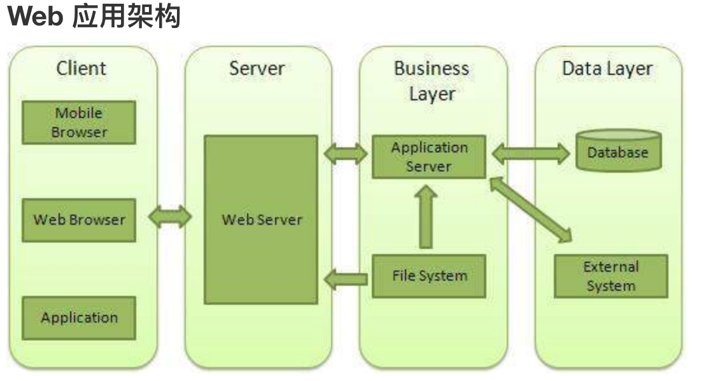
Client - 客户端，一般指浏览器，浏览器可以通过 HTTP 协议向服务器请求数据。
Server - 服务端，一般指 Web 服务器，可以接收客户端请求，并向客户端发送响应数据。
Business - 业务层， 通过 Web 服务器处理应用程序，如与数据库交互，逻辑运算，调用外部程序等。
Data - 数据层，一般由数据库组成。
# 使用 Node 创建 Web 服务器
Node.js 提供了 http 模块，http 模块主要用于搭建 HTTP 服务端和客户端，使用 HTTP 服务器或客户端功能必须调用 http 模块，代码如下：
var http = require('http');
以下是演示一个最基本的 HTTP 服务器架构(使用 8080 端口)，创建 server.js 文件，代码如下所示：
var http = require('http');
var fs = require('fs');
var url = require('url');
// 创建服务器
http.createServer( function (request, response) {
// 解析请求，包括文件名
var pathname = url.parse(request.url).pathname;
// 输出请求的文件名
console.log("Request for " + pathname + " received.");
// 从文件系统中读取请求的文件内容
fs.readFile(pathname.substr(1), function (err, data) {
if (err) {
console.log(err);
// HTTP 状态码: 404 : NOT FOUND
// Content Type: text/html
response.writeHead(404, {'Content-Type': 'text/html'});
}else{
// HTTP 状态码: 200 : OK
// Content Type: text/html
response.writeHead(200, {'Content-Type': 'text/html'});
// 响应文件内容
response.write(data.toString());
}
// 发送响应数据
response.end();
});
}).listen(8080);
// 控制台会输出以下信息
console.log('Server running at http://127.0.0.1:8080/');
2
3
4
5
6
7
8
9
10
11
12
13
14
15
16
17
18
19
20
21
22
23
24
25
26
27
28
29
30
31
32
33
接下来我们在该目录下创建一个 index.html 文件，代码如下：
<html>
<head>
<meta charset="utf-8">
<title>菜鸟教程(runoob.com)</title>
</head>
<body>
<h1>我的第一个标题</h1>
<p>我的第一个段落。</p>
</body>
</html>
2
3
4
5
6
7
8
9
10
执行 server.js 文件：
$ node server.js
Server running at http://127.0.0.1:8080/
2
接着我们在浏览器中打开地址：http://127.0.0.1:8080/index.html.会显示相应页面。
# 使用 Node 创建 Web 客户端
Node 创建 Web 客户端需要引入 http 模块，创建 client.js 文件，代码如下所示：
var http = require('http');
// 用于请求的选项
var options = {
host: 'localhost',
port: '8080',
path: '/index.html'
};
// 处理响应的回调函数
var callback = function(response){
// 不断更新数据
var body = '';
response.on('data', function(data) {
body += data;
});
response.on('end', function() {
// 数据接收完成
console.log(body);
});
}
// 向服务端发送请求
var req = http.request(options, callback);
req.end();
2
3
4
5
6
7
8
9
10
11
12
13
14
15
16
17
18
19
20
21
22
23
24
25
执行 client.js 文件，输出结果如下：
$ node client.js
<!DOCTYPE html>
<html>
<head>
<meta charset="utf-8">
<title>菜鸟教程(runoob.com)</title>
</head>
<body>
<h1>我的第一个标题</h1>
<p>我的第一个段落。</p>
</body>
</html>
2
3
4
5
6
7
8
9
10
11
12
# Node.js fs 模块
# 系统和文件的常识
- 权限位 mode
描述 内容 内容 内容 权限分配 文件所有者 文件所属组 其他用户 权限项 读 写 执行 字符表示 r w x 数字 4(八进制) 2八进制) 1八进制)
在本机上控制台上输入 ls -al，以其中一条为例：
drwxr-xr-x 8 xueying staff 256 2 26 20:32 .ShadowsocksX-NG
首先 drwxr-xr-x,一共10位 ，8-6位 文件所有者；5-3位，文件所属组；2-0位，其他用户；第九位：d 目录文件，p 管道文件，l连接文件， - 表示普通文件, s .socket。
- 标识位 flag 主要有：r,r+,w,w+,a,a+,ax,wx+,rs。快速记忆方法，r：读取；w：写入；s：同步；+：增加相反操作；x：排它方式。
- 文件描述符 fd nodejs中分配数值描述符 ，一般从3开始
# 文件基本操作
- 读取 readFileSync 同步 readFile 异步
- 写入 writeFileSync 同步 writeFile 异步 appendFile appendFileSync 追加写入 copyFileSync copyFile 拷贝写入。异步一般比同步多一个参数（回调）
- 打开
fs.open(".txt","r",(err,fs)=>{}) - 关闭
fs.close(fd,err=>{}) - 大型文件读取 fs.read() 实例：
const buf=Buffer.alloc(6);
fs.open("data.txt","r",(err,fd)=>{
fs.read(fd,buf,0,3,0,(err,bytesRead,buffer)=>{
console.log(bytesRead)//实际字节长度
console.log(buffer.toString())//内容
})//六个参数 fd，大小，写入开始，长度，读取开始，回调函数
})
2
3
4
5
6
7
- 写入 fs.write()
const buf=Buffer.from("hshs");//存入buf
fs.open("data.txt","r+",(err,fd)=>{
fs.write(fd,buf,0,6,3,(err,size,buf)=>{
fs.close(fd,err=>{
console.log("关闭文件")
})
})
})
2
3
4
5
6
7
8
# 文件目录基本操作
目录权限 查看
同步 fs.accessSync("mulu") 一般配合 try ... catch 使用
异步 fs.access("mulu",err=>{ if(err){ console.log("不可访问") }})
获取文件目录信息
statSync() 同步 stat() 异步
创建目录
mkdirSync() 同步 mkdir() 异步
读取目录
readdirSync() 同步 readdir() 异步
删除目录
rmdirSync() 同步 rmdir() 异步
删除文件
unlinkSync() 同步 unlink() 异步
注意：一般在node里，推荐用异步的方式来获取文件等操作，但可能会遇到异步回调嵌套的问题，一般通过Promise来解决。
下面写一个例子，比如获取doc目录下的所有txt文件：
const fs=require("fs");
const path=require("path");
function getFile(){
return new Promise((resolve,reject)=>{
const filePath=path.resolve(__dirname,"./doc");//获取根目录下doc目录
fs.readdir(filePath,(err,files)=>{
const fileArr=[];
files.forEach(fileName=>{
fileArr.push("/doc/"+fileName);
});
resolve(fileArr);//获取了文件
})
})
}
async function getFilePath(){//等待getFile获取完文件，返回这个数据
const result=await getFile();
return result;
}
function insertDate(){
getFilePath().then(res=>{
//存入数据库的操作
console.log(res)
})
}
insertDate()
2
3
4
5
6
7
8
9
10
11
12
13
14
15
16
17
18
19
20
21
22
23
24
25
# Node.js stream 模块
# 流的基本概念
流（stream）是 Node.js 中处理流式数据的抽象接口。 stream 模块用于构建实现了流接口的对象。
Node.js 提供了多种流对象。 例如，HTTP 服务器的请求和 process.stdout 都是流的实例。
流可以是可读的、可写的、或者可读可写的。 所有的流都是 EventEmitter 的实例。
访问 stream 模块：
const stream=require("stream");
为什么要使用流？ 它适合大文件、大数据的处理。它会把文件拆分，然后一块一块的运输。所有说它跟其他处理相比有两点提高：内存效率 和 时间效率。
# 流的类型
Node.js 中有四种基本的流类型：
1 . Writable - 可写入数据的流（例如 fs.createWriteStream()）。
2 . Readable - 可读取数据的流（例如 fs.createReadStream()）。
可读流运作于两种模式之一：
流动模式（flowing）或暂停模式（paused）。- 在流动模式中，数据自动从底层系统读取，并通过 EventEmitter 接口的事件尽可能快地被提供给应用程序。
- 在暂停模式中，必须显式调用 stream.read() 读取数据块。
所有可读流都开始于暂停模式，可以通过以下方式切换到流动模式：- 添加 'data' 事件句柄。
- 调用 stream.resume() 方法。
- 调用 stream.pipe() 方法将数据发送到可写流。
可读流可以通过以下方式切换回暂停模式：- 如果没有管道目标，则调用 stream.pause()。
- 如果有管道目标，则移除所有管道目标。调用 stream.unpipe() 可以移除多个管道目标。 只有提供了消费或忽略数据的机制后，可读流才会产生数据。 如果消费的机制被禁用或移除，则可读流会停止产生数据。
为了向后兼容，移除 'data' 事件句柄不会自动地暂停流。 如果有管道目标，一旦目标变为 drain 状态并请求接收数据时，则调用 stream.pause() 也不能保证流会保持暂停模式。
如果可读流切换到流动模式，且没有可用的消费者来处理数据，则数据将会丢失。 例如，当调用 readable.resume() 时，没有监听 'data' 事件或 'data' 事件句柄已移除。
添加 'readable' 事件句柄会使流自动停止流动，并通过 readable.read() 消费数据。 如果 'readable' 事件句柄被移除，且存在 'data' 事件句柄，则流会再次开始流动。
- 3 . Duplex - 可读又可写的流（例如 net.Socket）。
- 4 . Transform - 在读写过程中可以修改或转换数据的 Duplex 流（例如 zlib.createDeflate()）。
#
此外，该模块还包括实用函数 stream.pipeline()、stream.finished() 和 stream.Readable.from()。
所有的 Stream 对象都是 EventEmitter 的实例。常用的事件有：
data - 当有数据可读时触发。
end - 没有更多的数据可读时触发。
error - 在接收和写入过程中发生错误时触发。
finish - 所有数据已被写入到底层系统时触发。
# Node.js net 模块
# 基本概念
net 模块用于创建基于流的 TCP 或 IPC 的服务器（net.createServer()）与客户端（net.createConnection()）。
使用方法如下:
const net = require('net');
# 例子
服务端与客户端交互的例子
服务端 三步：
- createServer
- listen 端口 等待客户端的接入
- socket data，close 完成客户端交互
//创建tcp服务
const server=net.createServer();
server.listen("8000");
server.on("listening",function(){
console.log("监听成功 监听的是8000端口");
});
//一个新的连接建立 触发
server.on("connection",socket=>{
console.log("有新的连接");
socket.on("data",data=>{
console.log("server端收到client端的data",data.toString());
//返回客户端数据
socket.write("你好，我是服务端");
});
server.close();
});
server.on("close",()=>{
console.log("服务器已经连接")
});
2
3
4
5
6
7
8
9
10
11
12
13
14
15
16
17
18
19
客户端 三步：
- 创建socket
- 连接指定ip端口
- 监听data,close 完成与服务端交互
const net=require("net");
const netSocket=net.connect("8000");
netSocket.on("error",()=>{
console.log("连接失败")
});
netSocket.on("connect",()=>{
console.log("客户端与服务器端连接已经建立");
netSocket.write("你好，我是客户端");
//接收服务器数据
netSocket.on("data",data=>{
console.log("客户端收到服务端的数据",data.toString())
netSocket.end();
});
})
netSocket.on("end",()=>{
console.log("客户端关闭连接成功")
})
2
3
4
5
6
7
8
9
10
11
12
13
14
15
16
17
18
先启动服务端，再启动客户端。就可以看到连接成功。
# net.server类
- 创建server createServer
- listen() server.listen(端口号，ip)
- 监听事件 on
- listening:当服务器绑定后触发
- connection 新的连接建立时触发 socket
- close
- error
- 方法
- listen()
- close()
- address() 返回绑定地址 空对象
# net.scoket类
- 创建一个连接net.connect(端口，ip) localhost
- 监听事件 on
- connect
- data 接收到数据时触发， socket.setEncoding("utf8");
- end
- timeout
- error
- 方法
- connect()
- write(写入内容) 默认utf8
- setTimeout
- 属性
- netSocket.localPort
- localAddress
- remotePort
- remoteAddress
还有更多的属性和方法，请去node官网api。点后面的参考链接。
# 大规模NodeJS项目架构与优化
下面分为几点来讨论：
- NodeJS异步IO原理浅析及优化方案
- 异步IO
- Node对异步IO的实现
- 几个特殊的API
- 函数式编程在Node中的应用
- 常用的Node控制异步API的技术手段
- NodeJS内存管理机制及内存优化
- 大规模Node站点结构原理分析
- 服务器集群管理与Node集群的应用
- UV过千万的Node站点真身
# NodeJS异步IO原理浅析及优化方案
# 异步IO的好处
- 前端通过异步IO可以消除UI堵塞。
- 假设请求资源A的时间为M,请求资源B的时间为N.那么同步的请求耗时为M+N.如果采用异步方式占用时间为Max(M,N)。
- 随着业务的复杂，会引入分布式系统，时间会线性的增加，M+N+...和Max(M,N…)，这会放大同步和异步之间的差异。
- I/O是昂贵的，分布式I/O是更昂贵的。
- NodeJS 适用于IO密集型不适用CPU密集型
一些底层的知识
1.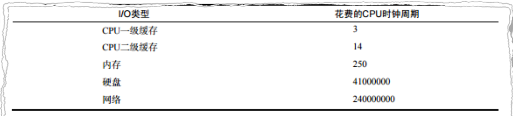 CPU时钟周期： 1/cpu主频 -> 1s/3.1 GH
2. p 是并行系统中的处理器数量；f=Ws/W 为串行部分的比例;p->∞ s=1/f
3.操作系统对计算机进行了抽象，将所有输入输出设备抽象为文件。内核在进行文件I/O操作时，通过文件描述符进行管理。应用程序如果需要进行IO需要打开文件描述符，在进行文件和数据的读写。异步IO不带数据直接返回，要获取数据还需要通过文件描述符再次读取。 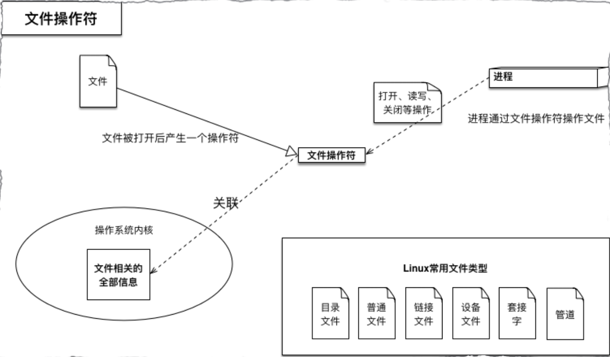
# Node对异步IO的实现
完美的异步IO应该是应该是应用程序发起非阻塞调用，无需通过遍历或者事件幻想等方式轮询。 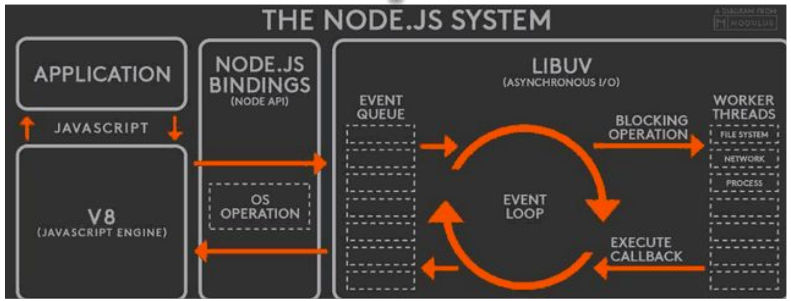
# 几个特殊的API
- 1.SetTimeout和SetInterval 线程池不参与
- 2.process.nextTick() 实现类似SetTimeout(function(){},0);每次调用放入队列中，在下一轮循环中取出。
- 3.setImmediate();比process.nextTick()优先级低
- 4.Node如何实现一个Sleep?
//idle观察者>Promise.then>io观察者>check观察者
// process.nextTick()>Promise.then>setTimeoutz>setImmediate
setTimeout(function () {
console.log(1);
}, 0);
setImmediate(function () {
console.log(2);
});
process.nextTick(() => {
console.log(3);
});
new Promise((resovle,reject)=>{
console.log(4);
resovle(4);
}).then(function(){
console.log(5);
});
console.log(6);
//4 6 3 5 1 2
2
3
4
5
6
7
8
9
10
11
12
13
14
15
16
17
18
19
sleep
async function test() {
console.log('Hello')
await sleep(1000)
console.log('world!')
}
function sleep(ms) {
return new Promise(resolve => setTimeout(resolve, ms))
}
test()
2
3
4
5
6
7
8
9
# 函数式编程在Node中的应用
1.高阶函数：可以将函数作为输入或者返回值，形成一种后续传递风格的结果接受方式，而非单一的返回值形式。后续传递风格的程序将函数业务重点从返回值传递到回调函数中。
app.use(function(){//todo})。
var emitter = new events.EventEmitter;
emitter.on(function(){//……….todo})
2.偏函数：指定部分参数产生一个新的定制函数的形式就是偏函数。Node中异步编程非常常见，我们通过哨兵变量会很容易造成业务的混乱。underscore，after变量
# 常用的Node控制异步技术手段
- 1.Step、wind（提供等待的异步库）、Bigpipe、Q.js
- 2.Async、Await
- 3.Promise/Defferred是一种先执行异步调用，延迟传递的处理方式。Promise是高级接口，事件是低级接口。低级接口可以构建更多复杂的场景，高级接口一旦定义，不太容易变化，不再有低级接口的灵活性，但对于解决问题非常有效
- 4.由于Node基于V8的原因，目前还不支持协程。协程不是进程或线程，其执行过程更类似于子例程，或者说不带返回值的函数调用。
- 一个程序可以包含多个协程，可以对比与一个进程包含多个线程，因而下面我们来比较协程和线程。我们知道多个线程相对独立，有自己的上下文，切换受系统控制；而协程也相对独立，有自己的上下文，但是其切换由自己控制，由当前协程切换到其他协程由当前协程来控制。
# 内存管理与优化
# V8垃圾回收机制
Node使用JavaScript在服务端操作大内存对象受到了一定的限制(堆区)，64位系统下约为1.4GB，栈区32位操作系统下是0.7G.新生代64位是32M 32位是16M
node —max-new-space-size app.js:
-max-old-space-size app.js
Process.memoryUsage->rss、heaptTotal、heapUsed
V8的垃圾回收策略主要基于分代式垃圾回收机制。在自动垃圾回收的演变过程中，人们发现没有一种垃圾回收算法能够胜任所有场景。V8中内存分为新生代和老生代两代。新生代为存活时间较短对象，老生代中为存活时间较长的对象。
一句话表示：小孩子尽管玩，到处丢东西大人收.
# Scavenge算法
- 在分代基础上，新生代的对象主要通过Scavenge算法进行垃圾回收，再具体实现时主要采用Cheney算法。Cheney算法是一种采用复制的方式实现的垃圾回收算法。它将内存一分为二，每一个空间称为semispace。这两个semispace中一个处于使用，一个处于闲置。处于使用的称之为From,闲置的称之为To.分配对象时先分配到From,当开始进行垃圾回收时，检查From存活对象赋值到To.非存活被释放。然后互换位置。再次进行回收，发现被回收过直接晋升，或者发现To空间已经使用了超过25%。他的缺点是只能使用堆内存的一半，这是一个典型的空间换时间的办法，但是新生代声明周期较短，恰恰就适合这个算法. 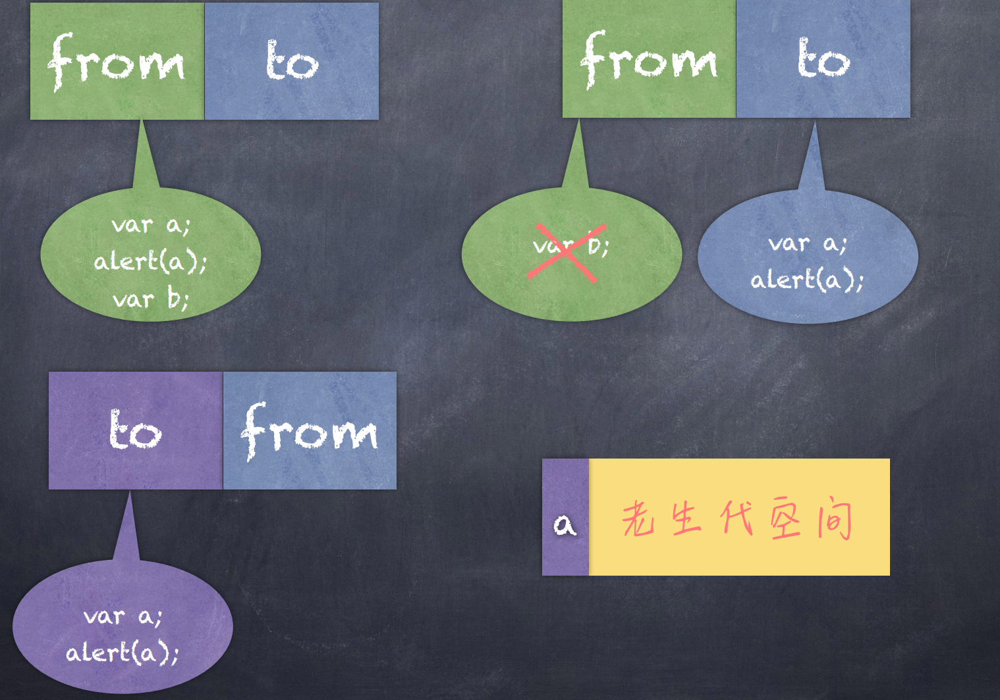
# Mark-Sweep & Mark-compact
- V8老生代主要采用Mark-Sweep和Mark-compact,在使用Scavenge不合适。一个是对象较多需要赋值量太大而且还是没能解决空间问题。Mark-Sweep是标记清楚，标记那些死亡的对象，然后清除。但是清除过后出现内存不连续的情况，所以我们要使用Markcompact，他是基于Mark-Sweep演变而来的，他先将活着的对象移到一边，移动完成后，直接清理边界外的内存。当CPU空间不足的时候会非常的高效。V8后续还引入了延迟处理，增量处理，并计划引入并行标记处理. 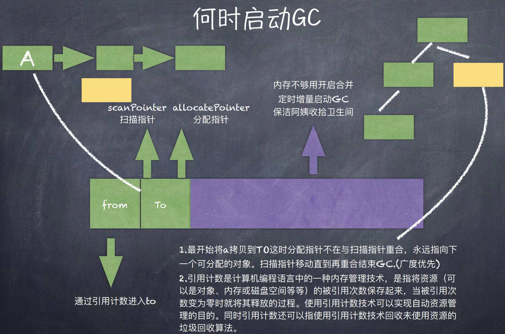
# V8垃圾回收机制
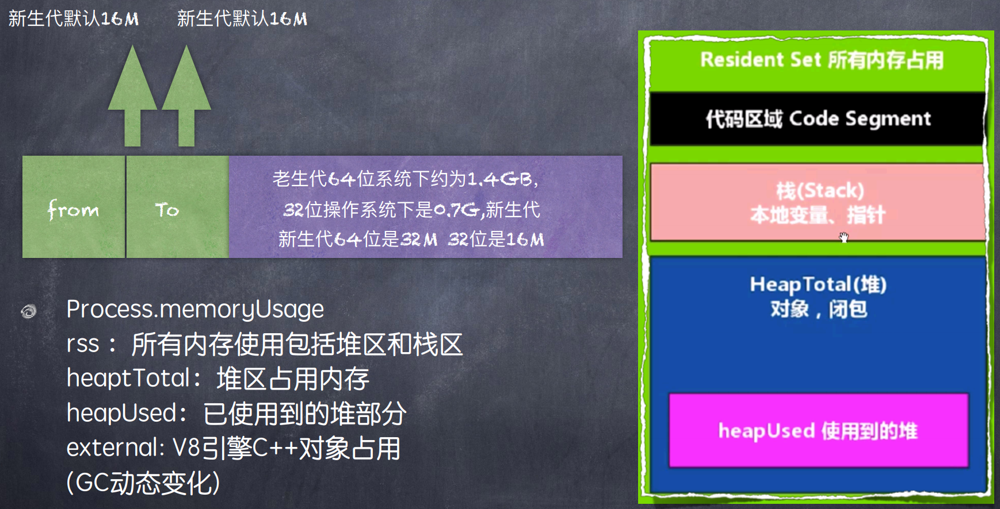
# 爬虫以及Robots协议介绍
爬虫，是一种自动获取网页内容的程序。是搜索引擎的重要组成部分，因此搜索引擎优化很大程度上就是针对爬虫而做出的优化。
robots.txt是一个文本文件，robots.txt是一个协议，不是一个命令。robots.txt是爬虫要查看的第一个文件。robots.txt文件告诉爬虫在服务器上什么文件是可以被查看的，搜索机器人就会按照该文件中的内容来确定访问范围。
# 配置爬虫系统和开发环境
需要用到的Node模块：
- Express node的server模块
- Request 相当于前端 $的ajax的方法，是后端发送请求的模块
- Cheerio 操作从后端拉取过来的数据
首先 express 一个新项目 express spider
安装： sudo npm install 流程
- 先在项目里，进入/bin文件夹，node www 起本地的服务
- 在bin目录下 npm install request --save-dev
- npm install cheerio --save-dev
- 修改app.js ,只留下简单的express 根目录输出，监听3000端口
- 用supervisor start app.js
- 在app.js，使用request 向指定网页，发送请求，返回body
- 利用cheerio 把body给调用。
var express = require('express');
var app = express();
var request=require('request');
const cheerio = require('cheerio');
app.get('/',function(req,res){
request("www.baidu.com",function(error,response,body){
if(!error&&response.statusCode==200){
const $ = cheerio.load(body);//cheerio相当于jq来用
res.json({
num:$("").length
})
}
})
});
app.listen(3000)
2
3
4
5
6
7
8
9
10
11
12
13
14
15
16
request被废弃了
# 数据推送
- comet
- websocket
- SSE
comet
就是http的长连接
案例
- 开启xampp，在tdocs里新建一个datepush文件夹，在里边新建一个html，一个php
function conn(){
$.ajax({
url:'test.php',
dataType:"json",
success:function(data){
console.log(data);
conn();
}
})
}
conn()
2
3
4
5
6
7
8
9
10
11
<?php
header("Content-type:appliacation/json;charset=utf-8");
header("Cache-Control:max-age=0");
$res=array('success'=>"ok","text"=>"ceshi");
echo json_encode($res);
sleep(1)
// $i=0;
// while($i<9){
// $i++;
// sleep(1);
// $res=array('success'=>"ok","text"=>"ceshi");
// echo json_encode($res);
// ob_flush();
// flush();
// }
?>
websocket
用于聊天类的项目
案例
- 在项目中 express,再安装
- npm install
- npm install socket.io --save-dev
- 在views里的index.html需要jq，socket.io这两个js
//app.js
var logger=require('morgan');
var bodyParser=require('body-parser');
var express = require('express');
var path = require('path');
var cookieParser = require('cookie-parser');
var app = express();
var server=require('http').createServer(app);
var io=require('socket.io').listen(server);
app.set('port',process.env.PORT||3000);
app.use(logger('dev'));
app.use(bodyParser.json());
app.use(bodyParser.urlencoded({
extended:false
}));
app.use(cookieParser());
app.use(express.static(path.join(__dirname,'public')))
io.on('connection',function(socket){
socket.emit('open');
socket.on("message",function(json){
console.log('接收到message',json)
});
socket.emit('test',"server ready");//后端传给前端数据
socket.broadcast.emit('test',"server ready")//广播给其他用户
})
app.get('/', function(req,res){
res.sendfile('views/index.html')
});
server.listen(app.get('port'),function(){
console.log("socket"+app.get('port'))
})
module.exports = app;
2
3
4
5
6
7
8
9
10
11
12
13
14
15
16
17
18
19
20
21
22
23
24
25
26
27
28
29
30
31
32
33
34
35
//index里调用socket js
$(function(){
var socket=io.connect('http://localhost:3000');
socket.on('open',function(){
console.log("已连接");
socket.send("连接成功");//往后台传的数据
});
socket.on("message",function(json){
console.log('message',json)
});
socket.on("test",function(json){
console.log('test',json)
})
})
2
3
4
5
6
7
8
9
10
11
12
13
14
SSE
服务器推送数据的方式
案例
- 在xampp里/htdocs里新建一个文件夹，新建一个php，一个html
var source;
function init(argument){
source=new EventSource('http://127.0.0.1/datepush/data.php');
source.onopen=function(){
console.log("连接已建立",this.readyState)
};
source.onmessage=function(event){
console.log("数据",event.date)
};
source.onerror=function(){}
}
init();
2
3
4
5
6
7
8
9
10
11
12
<?php
header("Content-type:text/event-stream;charset=utf-8");
header("Access-Control-Allow-Origin:http://127.0.0.1/");
echo "data:现在北京时间".date('H:i:s')
?>
# 参考链接
← PHP Webpack 使用 →